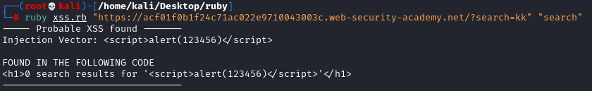

Detect Reflected XSS into with Nokogiri
Detect Reflected XSS with
NokogiriNokogiri treats text of the response as a TextNode that must be contained in some
ElementNode.
In our scenario:
• the ElementNode must be a script node
<script>....</script>
• TextNode must contains the string ‘alert(12345)’.
We can add and
test other XSS vectors other the one specified in XSS_VECTORS , the same thing is true for
Testing_Values
require 'nokogiri'
require 'open-uri'
require 'cgi'
#for https
require 'openssl'
#How use it
# ruby detect_xss.rb [target_url] [target_parameter]
#Target constant contains the URL of the target resource, including the query string
Target = URI(ARGV[0])
Parameter = ARGV[1]
XSS_VECTORS = ["<script>alert(123456)</script>"]
Testing_Values = ["alert(123456)"]
# Using the CGI class, we can parse the query string to obtain an hash of the GET parameters (‘name’=>’value’).
Query = CGI.parse(Target.query)
#The zip instruction combined with the each method, iterates over the XSS_VECTORS and the Testing_Values.
# In each iteration, the elements at the same position of the two array are selected: vect and test.
# We do this because we may want to test different injection payloads and for each of them,
# we may have a specific value to test.
# In this sceario we only a pair to test inside the arrys XSS_VECTORS & Testing_Values
XSS_VECTORS.zip(Testing_Values).each do |vect,test|
Query[Parameter] = vect
Target.query = URI.encode_www_form(Query)
#doc encapsulates the response and we can use Nokogiri to navigate it
doc = Nokogiri::HTML(URI.open(Target))
#--> With XPath, we can search(...) through all of the text nodes in order to find the one that contains the string ‘alert(12345)’.
#--> //text() is used to select all of the text nodes of the entire html document (without element nodes).
#--> [] brackets are used to test if the extracted nodes satisfies a particular condition.
#--> contains(arg1,arg2) is a XPath function that checks if a particular string (first argument)
# contains another string (second argument).
# Therefore, in the example for each text node (specified with the point . ),
# it tests if it contains the second argument (our ‘alert(12345)’ string ).
doc.search("//text()[contains(.,'#{test}')]").each do |el|
if el.parent.name == 'script'then
puts "----- Probable XSS found -------"
puts "Injection Vector: #{vect}","\n"
puts "FOUND IN THE FOLLOWING CODE"
puts el.parent.parent.to_html
puts "--------------------------------","\n"
end
end
end
